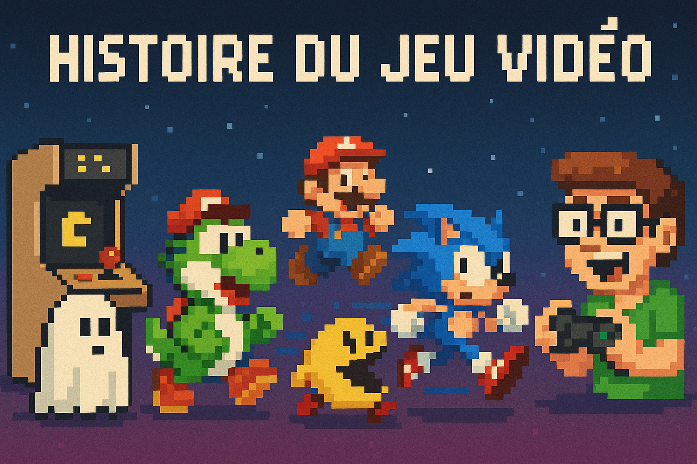

Depuis plus de cinquante ans, le jeu vidéo est devenu l’un des médias les plus influents et créatifs de notre époque. Né dans les laboratoires scientifiques des années 1950 et 60, il a progressivement conquis les salons du monde entier grâce aux consoles, aux bornes d’arcade et aux ordinateurs personnels.
De Pong à Tetris, de Super Mario à Final Fantasy, chaque décennie a vu naître des jeux emblématiques, des innovations techniques majeures et des évolutions culturelles profondes.
L’histoire du jeu vidéo est faite de rivalités entre constructeurs, de sauts technologiques, mais aussi de souvenirs personnels. Voyons ensemble quelques grandes dates.